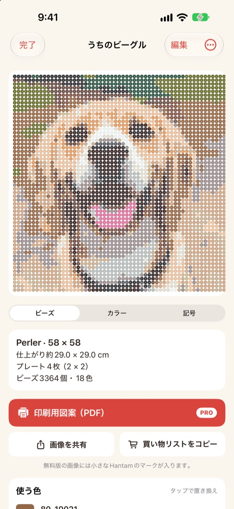
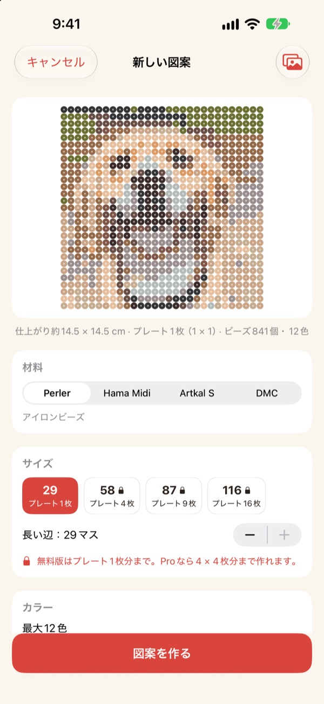
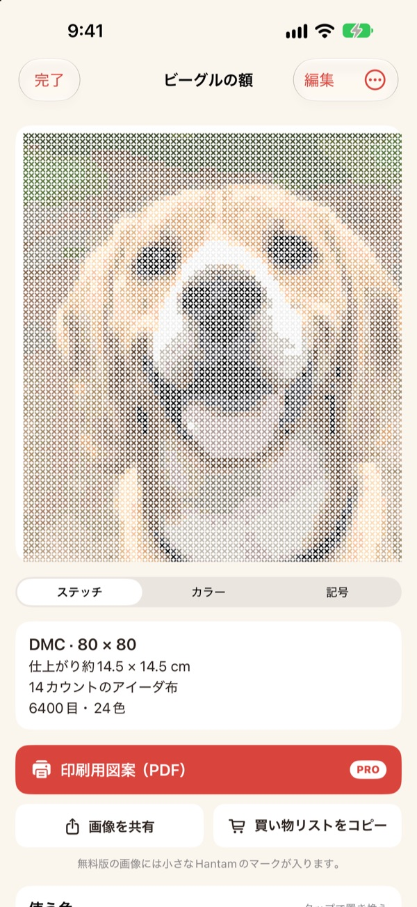
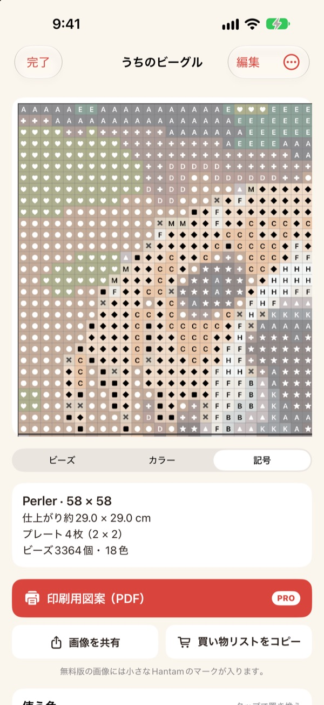
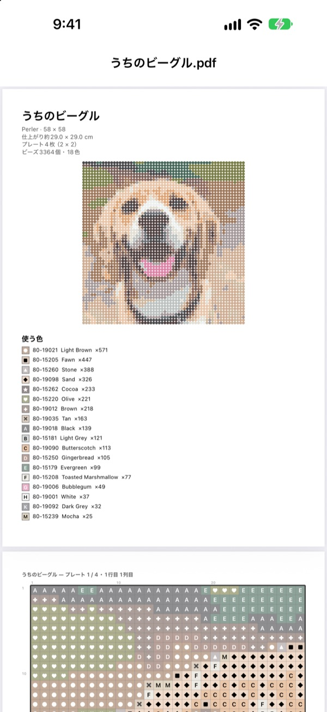

写真1枚が
図案になる
ペット、自分の顔、好きなキャラクターの写真を選んでください。Hantamが、実際に買える色に合わせたアイロンビーズやクロスステッチの図案を作ります。
プレート1枚分までは無料。写真はiPhoneの外に出ません。

写真で試してみる
アプリと同じ方法で、実際のPerlerのカラーチャートから色を選びます。サイズや色数を変えたり、自分の写真でも試してみてください。
図案は作れても、実際のビーズの色に合わせるのは大変
普通の画像アプリで写真をドット絵にすると、どのビーズにも糸にもない色になります。マスごとにどのビーズか見当をつけて、色ごとにいくつ買えばいいか数えなければなりません。Hantamは実際に売っている色から選び、必要な数まで正確に教えてくれます。
実在の色と色番号で
Perler、Hama Midi、Artkal Sのビーズか、DMCの糸から選びます。マスごとにそのブランドが実際に売っている色を当てはめ、色番号を付けます。
サイズと使う色数も決められます。大きな図案は29 × 29のプレート単位に分けます。

クロスステッチにも
DMCの糸を選べば、同じ写真がクロスステッチの図案になります。11・14・16・18カウントのアイーダから選ぶと、仕上がりサイズと色ごとに必要な目数がわかります。

買うものがひと目でわかる
記号の図案に切り替えれば、1マスずつ追いかけられます。プレートの境目や10目ごとに太い線が入ります。色ごとに必要なビーズの数を確認して、買い物リストをコピー でまとめて写せます。
マスをタップして変えたり、ある色を別の色にまとめて置き換えたりもできます。

印刷してすぐ始められる
Proなら 印刷用図案（PDF） を書き出せます。1ページ目に色の一覧、続いてプレート1枚ずつに分けた記号の図案が入ります。

図案まで3ステップ
- 1
写真を選ぶ
ペット、顔、ロゴ、キャラクター、なんでもOK。主役がはっきりした写真がきれいに仕上がります。
- 2
ビーズか糸を選ぶ
ブランド、サイズ、使う色数を決めます。
- 3
作る
画面の図案を見ながら作るか、Proで印刷します。
素材とサイズ
- Perler・Hama Midi・Artkal S
- アイロンビーズ、29 × 29のプレート、1粒約5mm
- DMC
- クロスステッチ用の刺しゅう糸、11・14・16・18カウントのアイーダ
- 無料
- ビーズはプレート1枚（29マス）、糸は長い辺40目まで
- Pro
- ビーズはプレート4 × 4枚（116マス）、糸は200目まで
- 色数
- 1つの図案で2色から50色まで
Perler、Hama、Artkal、DMCは各社の商標です。Hantamはこれらの会社とは関係ありません。画面の色は実物と少し異なる場合があります。
無料で始めて、大きな図案と印刷はProで
無料
- プレート1枚（クロスステッチは40目）までの図案
- Perler、Hama、Artkal、DMCすべてのブランド
- 色ごとの数、買い物リスト、色の置き換え
- 図案は3つまで保存
- 小さなHantamマーク入りの画像を共有
Hantam Pro
- 印刷用のPDF図案
- プレート4 × 4枚（クロスステッチは200目）まで
- 図案を無制限に保存
- マークなしの画像
- すべてのドット絵ツール
月額・年額のサブスクリプション、または1回払いの買い切り
アプリから友だちにProをプレゼントすることもできます。
よくある質問
写真はどこかにアップロードされますか？
いいえ。写真と図案はiPhoneの中だけで処理・保存されます。
画面の色が手持ちのビーズと少し違います。
画面ではプラスチックや糸と色が違って見えます。色の一覧で色をタップすると、同じブランドのより近い色に置き換えられます。
図案はどこまで大きくできますか？
無料では29 × 29のプレート1枚、クロスステッチは長い辺40目までです。Proならプレート4 × 4枚（116マス）、クロスステッチは200目まで作れます。
どんな写真がきれいに仕上がりますか？
主役がひとつで、背景がシンプルな写真です。色数が少ないほど図案はすっきりするので、ごちゃごちゃして見えたら色数を減らしてみてください。
ドット絵も作れますか？
はい。写真のドット絵化、110種類のお手本を見ながらのお絵かき、コマ送りアニメーションもそのまま使えます。ドット絵ツールはすべてProに含まれます。
購入を復元するには？
アプリの設定で 購入を復元 をタップしてください。Proを購入したときと同じApple Accountを使ってください。
サブスクリプションを解約するには？
iPhoneの設定 › 自分の名前 › サブスクリプションでHantamを選んで解約します。買い切りは1回だけの支払いで、更新されません。
不具合の報告や機能のリクエストは？
アプリの設定にあるフィードバック送信がいちばん早いです。下のメールアドレスやInstagramのDM（@lee25_ios）でも受け付けています。
ご質問、不具合の報告、ご要望は leeo@kakao.com までお気軽にどうぞ。